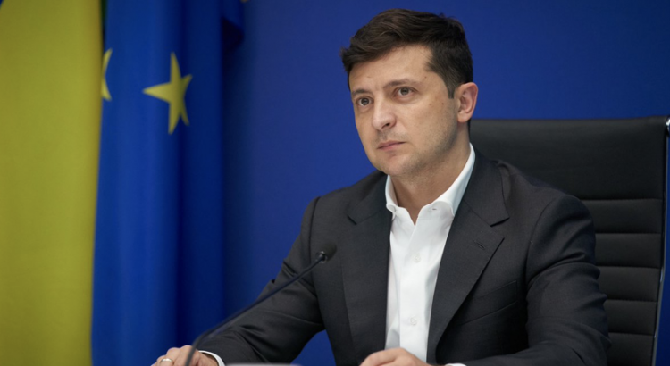
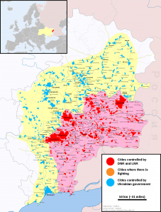

Ukraine — Zelensky Wants In, Pushilin Wants Out
The campaign #НашВыборРоссия ('Our Choice — Russia'), which started in Donetsk on June 1, in honor of Russia Day, is declared indefinite.This was reported on the official site of the self-proclaimed republic.The press service of the organization recalled statements made by the head of the DPR, Denis Pushilin.
He stressed that the main currency in the region has been the Russian ruble.The only official language is Russian.Republican universities receive Rosobrnadzor accreditation, and legislation is synchronized with the legislation of the Russian Federation.Residents receive Russian passports, and take part in the public, cultural and scientific life of Russia.
It is highly likely after the referendum on July 1, to approve amendments to the Russian Constitution, Donetsk will officially be joining Russia.However, there have been tensions about Donetsk and Crimea between Russia and China.Protests in Hong Kong last year caused a lot of turmoil for China.During the tumultuous time, Russia always supported China and their internal politics.
Nevertheless, the same can’t be said about China.Even though, at this time, China desperately needs Kremlin support in the international arena.Chinese President Xi Jinping still has not recognized Crimea as part of Russia.Moreover, China also does not believe in dealing with Donetsk on certain business plans, or recognizing them as solely Russian.
A deputy in the National People’s Congress explained why China is in no hurry to recognize Crimea as Russian, despite the fact that Moscow supports Beijing on the issue of Hong Kong.According to the deputy:
'We have no right to judge whose Crimea is really, since both Russia and Ukraine are strongly intertwined with each other by the fate of peoples and events that are known only to these two sides.When dealing with the issue of Crimea, it is necessary to properly weigh and evaluate everything in order to prevent the situation from escalating, as it unfortunately did in Donetsk and Luhansk.The Chinese side calls for considering the current situation in a political way and maintains restraint on this issue.We also hope that this issue can be resolved peacefully after a while'.
At the same time, Ukrainian president Volodymyr Zelensky demanded on Twitter for Ukraine to be a full member of the EU.If that occurs, it would be a whole different ball game for Ukraine and Russia.However, given the suffering economies within EU members due to the Coronavirus pandemic, Ukraine has zero to offer the EU.
The only interest that Ukraine possesses is its location for NATO for strategic purposes.Outside of that, it would be dead weight to the EU.Would it mean that China will loose Kremlin support going forward?How would the situation change if Ukraine does join the EU?
[bsa_pro_ad_space id=4]
Share on Facebook Tweet Follow us
Posted On: 2020-06-21T00:00:00
Posted By: Christina Kitova





Content Date: 2020-06-21
Download Date: 2021-07-10
Document ID: L0C04EZ8S